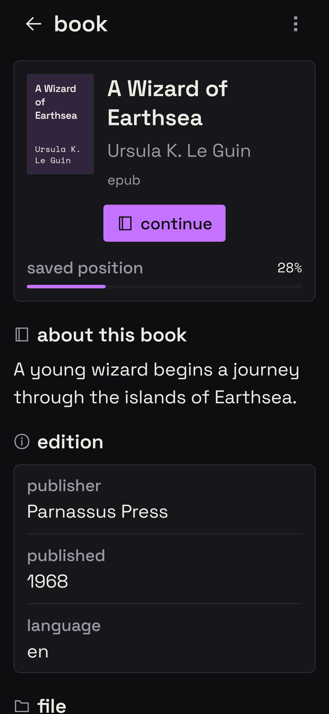
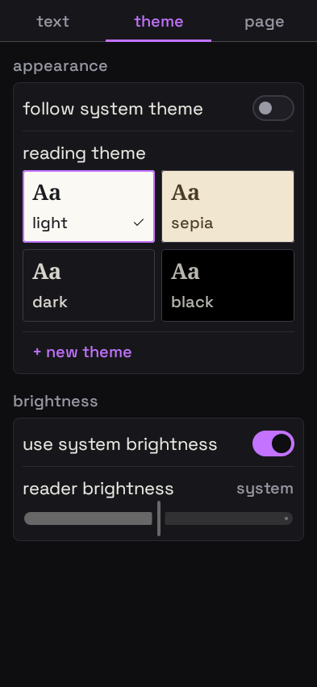
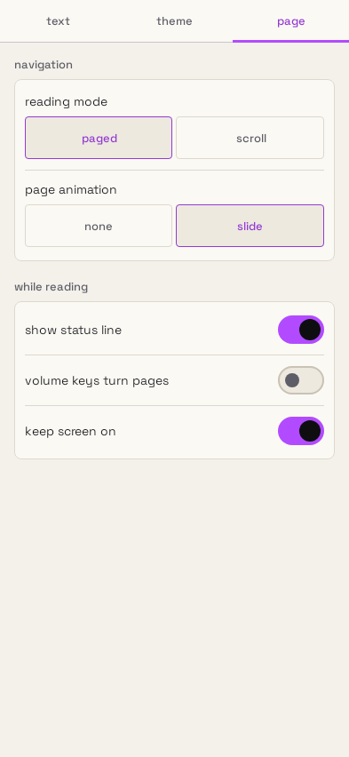
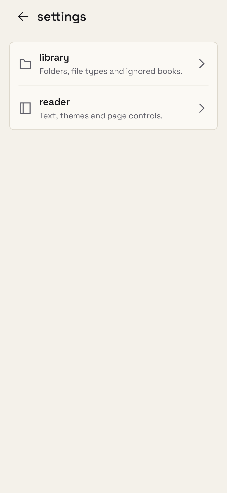

Deft 0.2.1
Book details and reader settings revised from device feedback. These are local Compose renders; physical-device reading is covered by the test checklist.
Merged M1 library and settings reference
Book detail
 Cover, identity and reading action; description and labelled edition groups.
Cover, identity and reading action; description and labelled edition groups.

Ink theme, 150% system text.
Reader settings
 Grouped typography and paragraph controls.
Grouped typography and paragraph controls.
 Ink theme, 150% system text.
Ink theme, 150% system text.

Theme swatches and system theme policy.

Page behavior and reading controls.
 Quick settings, 150% text, internal scrolling.
Quick settings, 150% text, internal scrolling.
Settings navigation

Grouped library and reader navigation.
 Book identity and restore action remain distinct.
Book identity and restore action remain distinct.